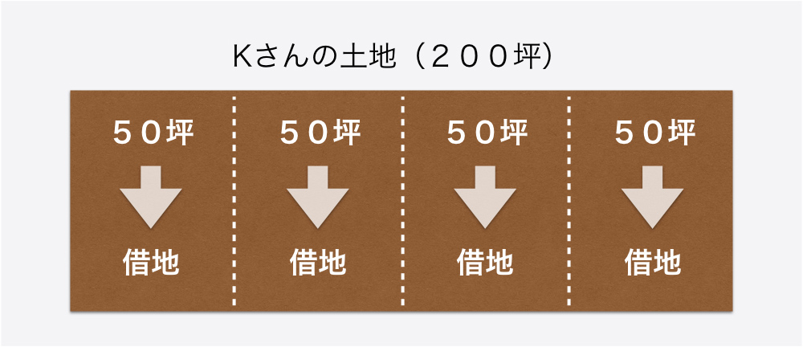

埼玉県に住む６０歳のＫさんは、先祖代々から受け継いだ２００坪の土地を所有しています。しかしその土地は、４つの世帯がそれぞれ５０坪ずつを借りている、一般借地の土地。Ｋさんの親の代に発生した借地の状態のままで土地を相続した、という事情でした。

頂いている地代は、１世帯あたり月々２万円、坪あたりで言えば４００円という、まことに微々たる金額でした。しかし法律的に家賃を上げることもできないし、もちろん出ていってくれということはできない。そんな気持ちで、親から相続したままの状態を放ったらかしにしたまま、１０年ほどが経っていました。
そんなあるときＫさんは、知人から「最近は相続税の法律も変わったし、借地の相続はけっこう面倒くさいぞ」と指摘されました。知人いわく、「これまでは貸している土地の地代収入と固定資産税の支払いがトントンなため問題なかったとしても、相続税の支払いの際は間違いなく節税をしないと大損してしまう。しかし節税をするにしても、まず借地権者に出ていってもらわないと何も始まらない」という話でした。
これまでは相続のことも、ましてや借地の相続をどうするかについては「親のときと同じようにやれば良いだろう」としか思っていなかったため、何の情報収集もしていなかったＫさん。しかも借地をしている４世帯は、親の世代同士は付き合いがあったものの、世代交代をしてしまった今、Ｋさんとはほとんど面識がない人達でした。そんな何の面識もない人たちと自分が交渉をしてうまく話をまとめたりすることができるだろうか？Ｋさんはいきなり不安にかられました。
そこで、自分一人で借地の問題を解決するべきではないと考えたＫさん。借地問題の整理が得意な人はいないかと情報集めを始めたところ、鈴木さんという不動産専門のコンサルタントがいることを知り、話を聞いてみることにしました。
無料コンサルティングでＫさんの相談内容をヒヤリングした鈴木さんは、さっそく不動産相続解決センターのコンサルタント・税理士・弁護士・司法書士等による解決チーム内でディスカッションし、Ｋさんへのアドバイスプランをまとめました。
まずはどうやったら借地権者に出ていってもらって、借地契約を解消したら良いかを教えてもらおうと思っていたＫさんでしたが、鈴木先生から出てきたアドバイスは意外なものでした。
「あのですね、開口一番、鈴木さんが言ったんですよ。今でも覚えていますよ、衝撃的だったから。なんて言ったか？『貸した土地は、戻ってこないものなんですＫさん』って、真顔で言うんですよ。
貸したお金だったらわかりますよ、貸した金は返ってこないつもりで貸せって。でも土地はげんに目の前にあるもので、誰も持って逃げたりできるようなものじゃないでしょう。でも鈴木さんは言い切るんですよ。貸した土地は、永遠に戻ってこないんだ、って。最初はもちろん、全く納得いきませんでしたよ、そんな話。」
借地のことも相続のことにも詳しくなかったＫさんは、旧借地法のことについても詳しくありませんでした。そこで鈴木さんは、旧借地法のことについて、大正１０年に設立された法律であるため当時の小作人という立場だった借り手を保護することが目的だったことや、平成４年に法改正があったあとでも、それ以前に成立した契約については旧法に基づくということなどを、懇切丁寧に説明しました。
「最初は全然、納得行きませんでしたよ。契約が満期になっても更新しなくちゃいけない。もし住んでる人が死んだとしても借地権が相続される。ひどいじゃないか、裁判したらどうなんだ、とも思ったんだけど、判例についても鈴木さんが丁寧に教えてくれるわけですよ。そしたらまさに僕みたいなケースで、地主側が契約更新を拒否したところ逆に裁判を起こされて負けていた。」
「『貸した土地はいつか返ってくる』と思っていたのは、ただの僕の勘違いなんだ、ってことをね、納得しました。もちろん時間はかかりましたよ。でも、昔の法律にもとづいて貸した土地は、その時点で、もう返ってこないものだったんだ、って、よぉく理解しましたよ。」
貸した土地は借り手側がウンと言わないかぎり永遠に返ってこないということをようやく受け止めることができたＫさんは、では次にどうしたら良いかを鈴木さんに訊ねました。
鈴木さんのアドバイスは、地主の側からできることは基本的に２つしかない、１つは借地権者に土地を安く買ってもらうこと。もう１つは底地権を第三者に売却すること、つまり土地をうまく売って相続の問題を解消させることだ、という内容でした。
一般的に、底地権を第三者へ売却する際の売却額は、借地権者への土地売却額より低くなる傾向があるため、まずは借地権者である４世帯に対して土地買取りの交渉をすることからスタートしてみることにしました。
「このときこそ鈴木さんに頼んでよかったと心から思いました。鈴木さんは、自分が借地権者との交渉窓口になるから、Ｋさんは一切顔を出す必要は無いよ、と言ってくださったんです。鈴木さんは不動産のプロだから、土地の評価額や売買額について、嘘やふっかけではなくて、ちゃんと理論立てて納得の行く説明をしてくれるわけです。私みたいな土地の素人が、『いくら幾らで買い取ってくれ』なんて言ったって、まったく信用ならないわけですからね。その意味でも鈴木さんに窓口になってもらったことで、間違いなく交渉がうまく運んだんだと思いますよ。」
「もちろん各世帯に何度も説明していただいたんで、それだけで半年以上かかりました。でも本当にその長い間ずっと根気良く対応していただいたのを見ていてね、ほんとうに、心の底から感服しましたね。」
Ｋさんの代理人として交渉を行った鈴木さんは、８ヶ月の交渉期間のすえ、最終的に４世帯のうち３世帯が土地買取りの合意に至りました。買取額は、もともとの坪単価５０万円の半分である２５万円。Ｋさんは１世帯あたり１，２５０万円、３世帯で約３，８００万円の現金を手に入れることができました。半額の値段でまとまったのはＫさんの土地の借地権割合の影響もありましたが、もちろん鈴木さんの手腕もありました。
鈴木さん：
「交渉で一番のポイントになるのは、やはり、土地が通常より安い値段で『自分のものになる』んだ、という点です。誰しも借地よりは、自分の土地に住みたいものです。それでも土地を買いたくないという人には、今買ってくれなければ底地権が第三者の手に渡るだけだよ、という話をすることもありますが、たいていの方は、買い取り交渉には前向きに話をしてくれるものです」
しかし、今回のケースでは１世帯が買取に応じませんでした。この世帯に住むのは、もうすぐ米寿を迎える一人暮らしのおじいちゃん。買取に応じない理由は「自分の老い先も長くないし、跡継ぎもここには住まないと言っているから、自分が生きている間だけは借地のままでやらせてほしい」というものでした。
「いやぁ困ったー、って思いましたよ、たしかに『自分が生きてる数年は』って、年寄りに頼まれたら、じゃああと少しなら…って思っちゃうのが人情じゃないですか。この最後の１軒は、うちの息子には悪いけども、問題の『棚上げ』で相続するしかないか、って思いました。でも鈴木さんはね、『最後の１軒も、借地の問題は既に解決しました』って言うんですよ。いや解決してないでしょ、って」
どういうことか？ 鈴木さんが言う「既に解決した」の真意とは…
鈴木さん：
「もちろん、４軒目の借地権も次の世代に相続されるので、おじいちゃんが亡くなったからといってＫさんに土地の権利が戻ってくるわけではありません。
しかしおじいちゃんの相続人は、Ｋさんの土地には住まないと言っています。その場合、相続人は借地権だけ持っていても何の得にもならないのです。そこで、借地も底地もあわせて第三者に売却する話を持ちかけるのです。それによって、おじいちゃんの相続人は、基本的には売却額の５０％を現金で受け取ることができる。借地権を相続した人は、その家に住まない場合、殆どの人がこうやって現金を手に入れることを望むのです」
「なるほど、筋道は立っているのか、と。今すぐ解決するわけではなくても、来るべき時が来たらするべきことをすれば良い。その筋道が立っているということで、どれだけ気持ちがすっきりしたか。」
Ｋさんは借地の相続の問題と借地借家の契約を引きずるストレスの両方から解放され、さらに約３，８００万円の現金を手に入れました。あらためて現状をベースにした最善の相続対策を鈴木先生に教えてもらうんだ、と話すＫさんの顔は晴れ晴れとしていました。
（文末注意書き）
※この解決事例はプライバシーに配慮するため、人名・地名・金額などの情報をあえて改変しておりますことをご了承下さい。
※実際のサービスにおいては常に必要に応じて弁護士、司法書士、税理士ほかの有資格者と連携しながら常に法的に適正なサービスを行っております。
※この解決事例に記載した解決方法は全てのお客様に当てはまるわけではありません。似たようなケースでもお客様の置かれた環境や目的に応じて、全く異なる解決策をご提案することもございます。あくまで特定のケースにおける一例として紹介しておりますことをご了承下さい。